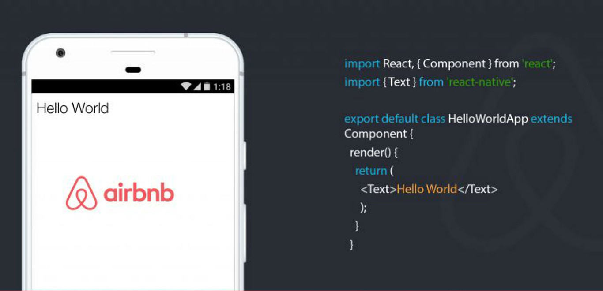

Bienvenidos a mi Slider
Soy Alexander Coronado
Matricula 2020-10706
Y hablaremos de:
Introducción al Desarrollo de Aplicaciones Móviles
Esto fue todo por mi exposicion
Espero que la hayan disfrutado!

function Gracias() {
gracias();
}
Esto fue todo por mi exposicion
Hasta la proxima.
Espero que la hayan disfrutado!
function Despedida() {
exit();
}